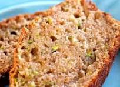

RICKS ZUCCHINI BREAD

The Most Decadent Zucchini Bread You Will Ever Taste
Well worth the effort of grating all that zucchini! This is the
best zucchini bread to hit our kitchen.
Ingredients
- 4 cups grated zucchini
- 2 teaspoons butter for pan
- 3 cups flour
- 1 teaspoon baking soda
- 1 teaspoon baking powder
- 1 teaspoon ground ginger
- 1/4 teaspoon ground nutmeg
- 1 1/3 cups sugar
- 2 eggs, beaten
- 2 teaspoons vanilla extract
- 1/2 teaspoon salt
- 3/4 cup unsalted butter, melted
- 1 cup walnuts
- 1 cup cranberries or raisins (optional)
Instructions
- Drain zucchini of excess moisture by placing it in a collander over
a bowl.
- Preheat oven to 350F and butter two loaf pans
- Combine dry ingredients. Vigorously whisk together flour, baking soda,
baking powder, cinnamin, ginger, and nutmeg.
- Whisk the wet ingredients in a separate bowl. Whisk sugar, eggs, vanilla extract and salt.
Stir in the drained grated zucchini and then the melted butter.
- Add dry ingredients to wet. Add the flour mixture 1/3 at a time.
Fold in the nuts and cranberries or raisins.
- Divide the batter equally between the two pans. Bake for
50 minutes or until a toothpick inserted comes out clean.
- Cool in pans for 10 minutes. Turn onto wire racks to cool thoroughly.